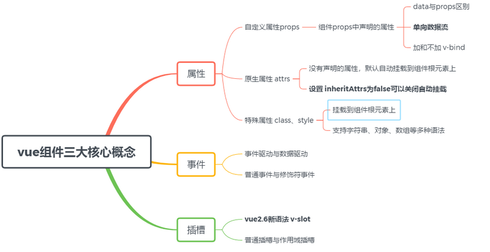
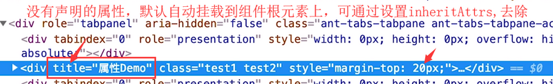
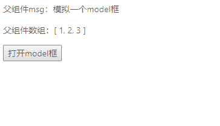
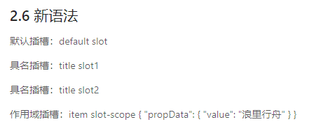

摘要： 搞懂Vue组件！
Fundebug经授权转载，版权归原作者所有。
本文主要介绍属性、事件和插槽这三个vue基础概念、使用方法及其容易被忽略的一些重要细节。如果你阅读别人写的组件，也可以从这三个部分展开，它们可以帮助你快速了解一个组件的所有功能。

本文的代码请猛戳github博客，纸上得来终觉浅，大家动手多敲敲代码！
prop 定义了这个组件有哪些可配置的属性，组件的核心功能也都是它来确定的。写通用组件时，props 最好用对象的写法，这样可以针对每个属性设置类型、默认值或自定义校验属性的值，这点在组件开发中很重要，然而很多人却忽视，直接使用 props 的数组用法，这样的组件往往是不严谨的。
// 父组件
<props name='属性'
:type='type'
:is-visible="false"
:on-change="handlePropChange"
:list=[22,33,44]
title="属性Demo"
class="test1"
:class="['test2']"
:style="{ marginTop: '20px' }" //注意:style 的优先级是要高于 style
style="margin-top: 10px">
</props>
// 子组件
props: {
name: String,
type: {
//从父级传入的 type，它的值必须是指定的 'success', 'warning', 'danger'中的一个，如果传入这三个以外的值，都会抛出一条警告
validator: (value) => {
return ['success', 'warning', 'danger'].includes(value)
}
},
onChange: {
//对于接收的数据，可以是各种数据类型，同样也可以传递一个函数
type: Function,
default: () => { }
},
isVisible: {
type: Boolean,
default: false
},
list: {
type: Array,
// 对象或数组默认值必须从一个工厂函数获取
default: () => []
}
}从上面的例中，可以得出props 可以显示定义一个或一个以上的数据，对于接收的数据，可以是各种数据类型，同样也可以传递一个函数。通过一般属性实现父向子通信；通过函数属性实现子向父通信
这是2.4.0 新增的一个API，默认情况下父作用域的不被认作 props 的特性绑定将会“回退”且作为普通的 HTML 特性应用在子组件的根元素上。可通过设置 inheritAttrs 为 false，这些默认行为将会被去掉。注意：这个选项不影响 class 和 style 绑定。
上个例中，title属性没有在子组件中props中声明，就会默认挂在子组件的根元素上，如下图所示：

两者选项里都可以存放各种类型的数据，当行为操作改变时，所有行为操作所用到和模板所渲染的数据同时都会发生同步变化。
data 被称之为动态数据，在各自实例中，在任何情况下，我们都可以随意改变它的数据类型和数据结构，不会被任何环境所影响。
props 被称之为静态数据，在各自实例中，一旦在初始化被定义好类型时，基于 Vue 是单向数据流，在数据传递时始终不能改变它的数据类型，而且不允许在子组件中直接操作 传递过来的props数据，而是需要通过别的手段，改变传递源中的数据。至于如何改变，我们接下去详细介绍：
这个概念出现在组件通信。props的数据都是通过父组件或者更高层级的组件数据或者字面量的方式进行传递的，不允许直接操作改变各自实例中的props数据，而是需要通过别的手段，改变传递源中的数据。那如果有时候我们想修改传递过来的prop,有哪些办法呢？
在子组件的 data 中拷贝一份 prop，data 是可以修改的
export default {
props: {
type: String
},
data () {
return {
currentType: this.type
}
}
}在 data 选项里通过 currentType接收 props中type数据，相当于对 currentType= type进行一个赋值操作，不仅拿到了 currentType的数据，而且也可以改变 currentType数据。
export default {
props: {
type: String
},
computed: {
normalizedType: function () {
return this.type.toUpperCase();
}
}
}以上两种方法虽可以在子组件间接修改props的值，但如果子组件想修改数据并且同步更新到父组件，却无济于事。在一些情况下，我们可能会需要对一个 prop 进行『双向绑定』，此时就推荐以下这两种方法：
// 父组件
<template>
<div class="hello">
<div>
<p>父组件msg：{{ msg }}</p>
<p>父组件数组：{{ arr }}</p>
</div>
<button @click="show = true">打开model框</button>
<br />
<demo :show.sync="show" :msg.sync="msg" :arr="arr"></demo>
</div>
</template>
<script>
import Demo from "./demo.vue";
export default {
name: "Hello",
components: {
Demo
},
data() {
return {
show: false,
msg: "模拟一个model框",
arr: [1, 2, 3]
};
}
};
</script>
// 子组件
<template>
<div v-if="show" class="border">
<div>子组件msg：{{ msg }}</div>
<div>子组件数组：{{ arr }}</div>
<button @click="closeModel">关闭model框</button>
<button @click="$emit('update:msg', '浪里行舟')">
改变文字
</button>
<button @click="arr.push('前端工匠')">改变数组</button>
</div>
</template>
<script>
export default {
props: {
msg: {
type: String
},
show: {
type: Boolean
},
arr: {
type: Array //在子组件中改变传递过来数组将会影响到父组件的状态
}
},
methods: {
closeModel() {
this.$emit("update:show", false);
}
}
};
父组件向子组件 props 里传递了 msg 和 show 两个值，都用了.sync 修饰符，进行双向绑定。
不过.sync 虽好，但也有限制，比如：
1）不能和表达式一起使用（如v-bind:title.sync="doc.title + '!'"是无效的）；
2）不能用在字面量对象上（如v-bind.sync="{ title: doc.title }"是无法正常工作的）。
这是因为在 JavaScript 中对象和数组是通过引用传入的，所以对于一个数组或对象类型的 prop 来说，在子组件中改变这个对象或数组本身将会影响到父组件的状态。比如上例中在子组件中修改父组件传递过来的数组arr,从而改变父组件的状态。
对于字面量语法和动态语法，初学者可能在父组件模板中向子组件中传递数据时到底加和不加 v-bind 会感觉迷惑。
v-bind:msg = 'msg'
这是通过 v-bind 进行传递数据并且传递的数据并不是一个字面量，双引号里的解析的是一个表达式，同样也可以是实例上定义的数据和方法(其实就是引用一个变量）。
msg='浪里行舟'
这种在没有 v-bind 的模式下只能传递一个字面量，这个字面量只限于 String 类量，字符串类型。那如果想通过字面量进行数据传递时，如果想传递非String类型，必须props名前要加上v-bind，内部通过实例寻找，如果实例方没有此属性和方法，则默认为对应的数据类型。
:msg='11111' //Number
:msg='true' //Bootlean
:msg='()=>{console.log(1)}' //Function
:msg='{a:1}' //Object用原生JavaScript事件驱动通常是这样的流程：
这种模式对业务来说是没有什么问题，但是从开发成本和效率来说会比较不理想，特别是在业务系统越来越庞大的时候。另一方面，找节点和修改节点这件事，效率本身就很低，因此出现了数据驱动模式。
Vue的一个核心思想是数据驱动。所谓数据驱动，是指视图是由数据驱动生成的，我们对视图的修改，不会直接操作 DOM，而是通过修改数据,其流程如下：
用户执行某个操作 -> 反馈到 VM 处理（可以导致 Model 变动） -> VM 层改变，通过绑定关系直接更新页面对应位置的数据
可以简单地理解：数据驱动不是操作节点的，而是通过虚拟的抽象数据层来直接更新页面。主要就是因为这一点，数据驱动框架才得以有较快的运行速度（因为不需要去折腾节点），并且可以应用到大型项目。
Vue事件分为普通事件和修饰符事件，这里我们主要介绍修饰符事件。
Vue 提供了大量的修饰符封装了这些过滤和判断，让开发者少写代码，把时间都投入的业务、逻辑上，只需要通过一个修饰符去调用。我们先来思考这样问题：怎样给这个自定义组件 custom-component 绑定一个原生的 click 事件？
<custom-component>组件内容</custom-component>如果你的回答是<custom-component @click="xxx">，那就错了。这里的 @click 是自定义事件 click，并不是原生事件 click。绑定原生的 click 是这样的：
<custom-component @click.native="xxx">组件内容</custom-component>实际开发过程中离不开事件修饰符，常见事件修饰符有以下这些：
1).lazy
在默认情况下，v-model 在每次 input 事件触发后将输入框的值与数据进行同步 。你可以添加 lazy 修饰符，从而转变为使用 change事件进行同步。适用于输入完所有内容后，光标离开才更新视图的场景。
2).trim
如果要自动过滤用户输入的首尾空白字符，可以给 v-model 添加 trim 修饰符：
<input v-model.trim="msg">这个修饰符可以过滤掉输入完密码不小心多敲了一下空格的场景。需要注意的是，它只能过滤首尾的空格！首尾，中间的是不会过滤的。
3).number
如果想自动将用户的输入值转为数值类型，可以给 v-model 添加 number 修饰符:
<input v-model.number="value" type="text" />从上面例子，可以得到如果你先输入数字，那它就会限制你输入的只能是数字。如果你先输入字符串，那它就相当于没有加.number
<!-- 阻止单击事件继续传播 -->
<a v-on:click.stop="doThis"></a>
<!-- 提交事件不再重载页面 -->
<form v-on:submit.prevent="onSubmit"></form>
<!-- 修饰符可以串联 -->
<a v-on:click.stop.prevent="doThat"></a>插槽分为普通插槽和作用域插槽，其实两者很类似，只不过作用域插槽可以接受子组件传递过来的参数。
我们不妨通过一个todolist的例子来了解作用域插槽。如果当item选中后，文字变为黄色（如下图所示），该如何实现呢？
// 父组件
<template>
<div class="toList">
<input v-model="info" type="text" /> <button @click="addItem">添加</button>
<ul>
<TodoItem v-for="(item, index) in listData" :key="index">
<template v-slot:item="itemProps"> // 这是个具名插槽
// 其中itemProps的值就是子组件传递过来的对象
<span
:style="{
fontSize: '20px',
color: itemProps.checked ? 'yellow' : 'blue'
}"
>{{ item }}</span
>
</template>
</TodoItem>
</ul>
</div>
</template>
<script>
import TodoItem from "./TodoItem";
export default {
components: {
TodoItem
},
data() {
return {
info: "",
listData: []
};
},
methods: {
addItem() {
this.listData.push(this.info);
this.info = "";
}
}
};
</script>
// 子组件
<template>
<div>
<li class="item">
<input v-model="checked" type="checkbox" />
<slot name="item" :checked="checked"></slot> // 将checked的值传递给父组件
</li>
</div>
</template>
<script>
export default {
data() {
return {
checked: false
};
}
};
</script>值得注意：v-bind:style 的对象语法十分直观——看着非常像 CSS，但其实是一个 JavaScript 对象。CSS 属性名可以用驼峰式 (camelCase) 或短横线分隔 (kebab-case，记得用引号括起来) 来命名。
在 2.6.0 中，我们为具名插槽和作用域插槽引入了一个新的统一的语法 (即 v-slot 指令)。它取代了 slot 和 slot-scope 。
我们通过一个例子介绍下默认插槽、具名插槽和作用域插槽的新语法：
// 父组件
<template>
<div class="helloSlot">
<h2>2.6 新语法</h2>
<SlotDemo>
<p>默认插槽：default slot</p>
<template v-slot:title>
<p>具名插槽：title slot1</p>
<p>具名插槽：title slot2</p>
</template>
<template v-slot:item="props">
<p>作用域插槽：item slot-scope {{ props }}</p>
</template>
</SlotDemo>
</div>
</template>
<script>
import Slot from "./slot";
export default {
components: {
SlotDemo: Slot
}
};
</script>
// 子组件
<template>
<div>
<slot />
<slot name="title" />
<slot name="item" :propData="propData" />
</div>
</template>
<script>
export default {
data() {
return {
propData: {
value: "浪里行舟"
}
};
}
};
</script>
给大家推荐一个好用的BUG监控工具Fundebug，欢迎免费试用！
Fundebug专注于JavaScript、微信小程序、微信小游戏、支付宝小程序、React Native、Node.js和Java线上应用实时BUG监控。 自从2016年双十一正式上线，Fundebug累计处理了10亿+错误事件，付费客户有阳光保险、荔枝FM、掌门1对1、核桃编程、微脉、青团社等众多品牌企业。欢迎免费试用！